Meta-analysis of generalized additive models
Usage
metagam(
models,
grid = NULL,
grid_size = 100,
type = "iterms",
terms = NULL,
method = "FE",
nsim = NULL,
ci_alpha = 0.05,
restrict_range = NULL
)Arguments
- models
List of generalized additive models, each of which has been returned by
strip_rawdata. If the list is named, the names will be used in the output.- grid
Grid of values of the explanatory variables over which to compute the estimated smooth terms. Defaults to
NULL, which means that a grid is set up for the smooth terms defined by thetermsargument, with length given bygrid_sizefor numeric variables and a single value of each factor variable.- grid_size
Numeric value giving the number of elements to use in the grid of explanatory variables when
grid=NULL. When multiple terms are supplied, each combination of values of explanatory variables are generated, and the number of grid points becomesgrid_sizeto the power of the number of terms.- type
Type of prediction to use. Defaults to
"iterms". Available options are"iterms","link", and"response". See the documentation ofmgcv::predict.gamfor details. Note thattype="terms"is not supported, since it may result in estimated zero standard deviation for smooth terms.- terms
Character vector of terms, smooth or parametric, to be included in function estimate. Only used if
type="iterms". Defaults toNULL, which means that the first smooth term when listed in alphabetic order is taken.- method
Method of meta analysis, passed on to
metafor::rma.uni. Defaults to"FE". See the documentation tometafor::rmafor all available options.- nsim
Number of simulations to conduct in order to compute p-values and simultaneous confidence bands for the meta-analytic fit. Defaults to
NULL, which means that no simulations are performed. Only used iftype="iterms".- ci_alpha
Significance level for simultaneous confidence bands. Ignored if
nsimisNULL, and defaults to 0.05.- restrict_range
Character vector of explanatory variables to restrict such that only values within the range for each cohort contribute to the meta-analysis. Default to
NULL, which means that each model contributes across the whole range specified bygrid. Currently not implemented.
Details
It is currently assumed that all models have been fit with the same smooth terms, although they do not need to have the same basis functions or knot placement. Future versions will also include meta-analysis of parametric terms in the models.
p-values are truncated below at 1e-16 before computing meta-analytic p-values to ensure that no values are identically zero, which would imply that the alternative hypothesis be true with no uncertainty.
Examples
library(metagam)
library(mgcv)
#> Loading required package: nlme
#> This is mgcv 1.9-3. For overview type 'help("mgcv-package")'.
## Create 5 datasets
set.seed(1234)
datasets <- lapply(1:5, function(x) gamSim(scale = 5, verbose = FALSE))
## Fit a GAM in each dataset, then use strip_rawdata() to remove
## individual participant data
models <- lapply(datasets, function(dat){
## This uses the gam() function from mgcv
model <- gam(y ~ s(x0, bs = "cr") + s(x1, bs = "cr") + s(x2, bs = "cr"), data = dat)
## This uses strip_rawdata() from metagam
strip_rawdata(model)
})
## Next, we meta-analyze the models.
## It is often most convenient to analyze a single term at a time. We focus on s(x1).
meta_analysis <- metagam(models, terms = "s(x1)", grid_size = 30)
## We can print some information
summary(meta_analysis)
#> Meta-analysis of GAMs from cohorts, using method FE.
#>
#> Smooth terms analyzed: s(x1).
#>
#>
#>
## We can plot the meta-analytic fit together with the individual fits
plot(meta_analysis)

plot(meta_analysis, ci = "pointwise")

## We can also compute p-values and simultaneous confidence intervals, by setting the nsim argument.
## For details, see the separate vignette.
if (FALSE) { # \dontrun{
meta_analysis <- metagam(models, terms = "s(x0)", grid_size = 30, nsim = 1000)
summary(meta_analysis)
plot(meta_analysis, ci = "both")
plot(meta_analysis, ci = "simultaneous")
} # }